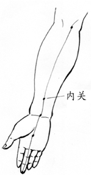
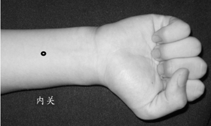
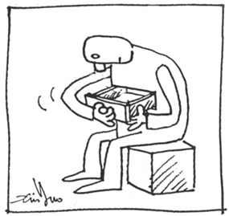
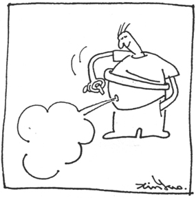
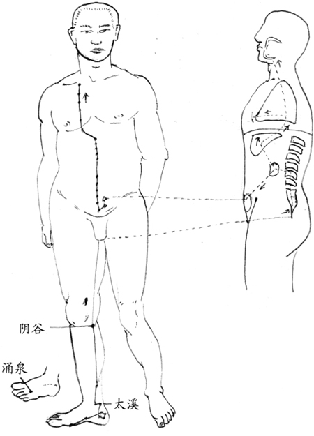
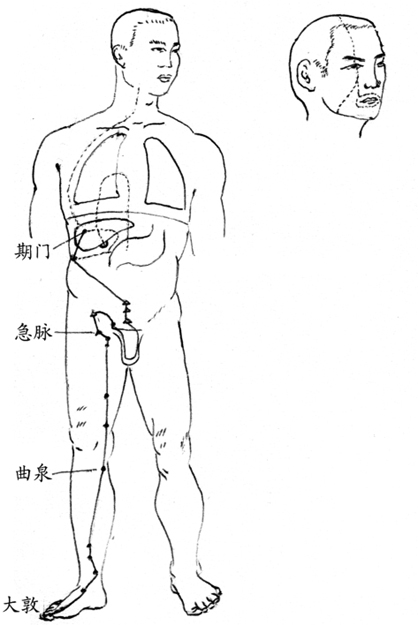
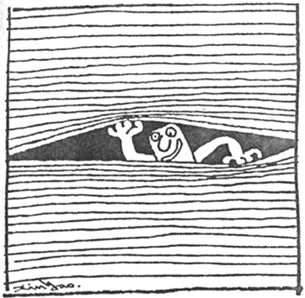

第八章 慢性病的调养
记得小时候，父亲在40岁时，患了风湿病，不能走路，当时我最深刻的印象是“那是一种不会根治的可怕疾病”，后来父亲到了55岁时，又患了大肠癌。癌症意味着死亡，当时对全家可是晴天霹雳，父亲的工作是全家人唯一的收入来源，这种疾病会改变全家稳定的生活。父亲幸运地度过了癌症的劫难，到了老年，又患了糖尿病。自从得了风湿病之后，父亲就不停地吃药，就像西方人的饭后甜点一样，每餐饭后，总看到父亲吃下各种颜色的药。
这是父亲一生中曾经罹患的疾病，也是许多人都会面临的疾病。这些疾病都是常见的慢性病，每一个人放眼周围的亲朋好友，都会有人患上这些疾病。这些病最困扰的是没有根治的方法，却有一大堆的禁忌。一开始吃药，就永远不能停，从此就成为医院里长期的病人。通常这些病人都是家庭的男主人或女主人，整个家庭就此蒙上永远去不掉的阴影。
中国人有一句话“真药医假病，真病无药医”，这句话的真义其实是说明真正治疗人体的并不是那些药而是身体自己的能力。从人体外部的一个小伤口到内部脏腑里的严重疾病，都是只有身体自己才能治。而身体治病的能力完全依赖身体是不是有足够的血气能量，和各个脏腑的运行是否正常。出现疾病时，人体有没有能力对抗外来细菌或病毒的侵袭，有没有能力把受损的器官修复。
灵丹妙药就在身体里，却在外面不停的找。
大多数人都有一种经验，在年轻时身上的小伤口很容易复原，随着身体的老化和衰弱，伤口的自愈能力愈来愈差，需要更长的时间。这种现象就说明人体的修复能力和血气的高低有密切关系。
人体在不同的血气水平时身体的各种反应都会不同，就拿伤口的复原来说，大家都知道糖尿病的众多症状中有一个是伤口非常不容易复原。这就说明糖尿病的病人血气非常低。
接下来的章节是针对我们有实际经验的慢性病，从血气能量观点重新理解每一种慢性病的病理，再从中发展出治疗方案。有一点必须声明的是这些病理是从血气能量的观点所做的分析，在未来还需要更多的实证才能成为真正可用的方法，在这里提供给读者的目的，是让读者在选择养生疗法时，对于许多难以理解的状况出现时，可以从另一个角度思考身体的变化。
在多数的科学领域中，都经过哲学、理论科学、实证科学三个步骤和方向的发展，互相影响推动整体的进步。例如物理学中就有理论物理和实证物理的区别。许多新的科技都是在理论出现许多年之后，才能走向实用。
在医学领域，由于直接涉及人的生命，同时近代医学最重大的进步都来自实证，因此实际上现代医学并没有理论医学这门学科，仅有实证医学，所有理论和方法都必须有实证才能被接受，所有实证都必须具备眼见为真的条件。
无论是现代或未来高超的解剖技术，都不可能从解剖中找出心识和灵魂造成疾病的原因。
解剖学是现代医学最重要的根据，所有的理论都需要在解剖学中予以证实，也就是必须眼见为真。由于人体有许多方面都和现代的计算机很相像，因此，这本书反复用计算机系统来比拟人体，这里再用一次。
我们都知道现在的计算机是由硬件和软件组成的，如果我们不知道软件的设计原理，直接解剖硬件是不可能找出软件的真相，也不可能修复一个完整的计算机系统，甚至没有任何证据可以证明软件的存在。
人体的运行和计算机非常相像，计算机有硬件、应用软件和系统软件三个部分，人体也有身、心、灵三个部分，现代医学也有愈来愈多的证据认为这三者都可能是疾病的原因。无论是现代或未来高超的解剖技术，都不可能从解剖中找出心识和灵魂造成疾病的原因。就像解剖计算机无法证明软件的存在一样，解剖人体是不可能找出心识和灵魂存在的证据，但并不能就此否定心识和灵魂的存在。
单纯的实证医学是不可能发展出真正能使多数慢性病痊愈的技术，现代的医学体系必须尽快建立理论医学体系，建立多种不同哲学观点的理论系统，再从中进行大量的验证之后，才有机会找出真正能使慢性病痊愈的方法。
接下来的章节，即是以这种观点所建立的初步理论模型。我们用这样的模型指导患者进行调养，虽然没有足够的样本，但成功的机会很高。
痛风的调养
在网络上的“医疗大百科”中对于“痛风”的成因和症状的解释如下：
痛风
痛风是极普通的毛病，患者多为男性。
成因：
血液中散布太多的尿酸会造成痛风，而原因可能是身体制造了过多的尿酸（如血癌类的恶疾），或是身体排除尿酸的速度不够快（如肾脏出毛病的时候）。此外，使用利尿剂也会增加体内的尿酸。
症状：
不论原因为何，只要血液内有太多的尿酸，它的结晶体就会落在关节处并使之发炎，这样到底有多痛呢？只要想像把一大堆针状的尿酸结晶体丢入手肘、脚趾、手指、膝盖或手腕虚的关节内，然后试着去触碰或转动这些地方，您就知道多难受了。痛风无法根治。我们虽可以舒缓它发作时的疼痛，也能预防它再度发生，但是致病的根本原因却永远存在。
如何预防发作：
预防痛风发作的重点在于长期服用药物来降低体内尿酸的含量。如果您体内尿酸太多是因为身体无法排除它，建议您服用sulfinpyrazone（Anturane），每天200－400毫克，分几次服用，它能帮助肾脏将尿酸排除在尿液内。阿司匹林会阻碍Anturane的功效，因此应避免两者同时服用。如果尿酸太多是因为生产过量，我则建议您服用300毫克的allopurinol（Zyloprim）锭剂一颗，来抑制尿酸的制造。身体接受Zyloprim和Anturane的程度大致良好，但是偶尔会有红疹的情况发生，而且Zyloprim有时候还会影响肝功能，因此服药期间最好每年定期去作验血检查1～2次。如果这两种预防性药物还无法防止痛风的发作，不妨每天再加上1～2颗0.6毫克的秋水仙素（colchicine），它对痛风引起的急性发炎关节有特别的效用。
禁食食品：应禁食酒类、咖啡因、矱鱼、肉类及动物内脏，如肾、肝、脑、胰脏等。一些会增加尿酸含量的蔬菜，如芦笋及洋菇等也属于禁忌品。不遵守以上饮食约束的人常得承担痛苦的后果。然而即使再合作再谨慎饮食的人，痛风仍然可能发作，原因不外是压力太大引起极度地焦虑、深恐要开刀，或是受了感染或是利尿剂的关系，或者根本毫无理由。
当一个初次被医生诊断得了痛风的人，上网看到这样的说明，相信一定会非常沮丧，居然染上一个不明原因，也没药可治的病，虽然要不了命，但痛起来要人命。最糟糕的是想到这个病将和自己共度余生，心情的低落可想而知。
这样的解释是现代医学对于痛风的基本看法，认为痛风的直接原因是尿酸引起的，但对于尿酸的成因就没有再深究了。同时直接的断言痛风是无法根治的疾病，而且致病的原因永远存在。
再看其治疗所用的药物，几乎全是化学药剂，最难以让人接受的是最终明确告知大众，所有这些治疗和预防的措施可能会无效。这是现代医学面对慢性病典型做法，充分显现出其面对疾病的无能和不负责任，好像病人得了病不是什么大不了的事，没有人需要负责治愈，但药还是要卖，钱还是要赚的，而且所开的药都是每天得吃的，必须吃到离开世界为止，这样的逻辑最符合药厂的利益。
明白了痛风的原因，治起来就不难。
从中医的观点，痛风并没有那么悲观，痛风的人多半有两个共同的症状，即是身体经常处于心包积液过多和肝热的状态。
痛风的患者多数都有肠胃的问题，肠胃的问题会导致心包积液过多，心包积液过多会使心脏泵血的能力低落，血液无法送到处于微血管末梢的关节，造成关节部位垃圾的堆积，堆积的垃圾主要是尿酸晶。
尿酸晶的形成则和肝热有密切的关系，肝热的人小便特别黄而味重，小便中尿酸的比例特别高，这些尿酸堆在关节中会造成痛风，堆在肾脏里则成为肾结石，非常恼人。因此，当这种现象出现时，就应该特别注意保养了。
明白了痛风的原因，治起来就不难。由于这种病痛起来要人命，因此，缓解疼痛的方法非常重要。疼痛发作时尿酸晶已经存在关节里，要缓解其疼痛，首先要将其排出，至少使之离开原来的位置。这时按摩心包经，使心脏恢复正常的能力，将血液送至关节，才能使尿酸晶移动，甚而排出，症状即能缓解。
按摩的顺序是先按昆仑，接着按膻中，再按内关（图十七），以及心包经其他的穴位。由于发病时这些穴位都是不通的，因此按起来一定特别痛。这种按摩是痛风患者每日必做的功课，只要经常按，疼痛几乎不会发作。长期下来不但新的尿酸晶不会在关节处堆积，原来堆积的尿酸晶也会愈来愈少，甚至变形的关节都有可能慢慢恢复。因此这个方法可以说是标本兼治的手段。
很多人身体力行地奉行本书中的一式三招及健康观念，健康真的就这么得到了。

图十七内关属心包经，在前臂掌面的下段。

改变生活作息也是治疗痛风最根本的手段之一。
但是光是按摩心包经是不够的，还必须使肝热现象所造成的影响减到最小。当然最好是彻底消除肝热的产生，这就需要用到一式三招的另两招，早睡和敲胆经了。当血气充足时，身体是不容易产生肝火的。因此，改变生活作息也是治疗痛风最根本的手段之一。
当痛风发作时，还可以利用热水泡脚缓解肝热，或者其它章节所提到的按摩或针灸太冲穴也是消除肝热很好的方法之一。
利用一式三招来对治痛风是非常简单而且有效的方法，可以快速消除痛风的疼痛，如果按摩技术良好，彻底使心包经通畅，一次的按摩有时可以达到一星期都不会发作的效果。
过敏性鼻炎的保健
过敏性鼻炎是现代人很普遍的疾病，多数人都认为是现代空气不好造成的，特别是有些人换了一个地方，病就改善了。例如，从台湾到美国，刚到的一段时间，这个病就好了，但是有些人过一段时间又复发了，也有人从此不再发作。
过敏性鼻炎只是身体大量或反复进行排泄寒气的症状。
所谓过敏性鼻炎，主要的症状就是鼻塞、打喷嚏、流鼻水等症状，这些症状和感冒非常类似，但是并没有咳嗽、发烧、头痛等感冒的症状，同时，由于发病的频率很高，因此称之为过敏性鼻炎，这些都是从西医的逻辑来看的论断。
从中医的观点，中医并没有过敏性一类的疾病名称。这些症状是寒气从体内出去的现象，在前面讨论寒气的章节中，我们对这些症状已有很详细的说明，过敏性鼻炎只是身体大量或反复进行排泄寒气的症状。
对于存在身体内的寒气，人体的修复系统会等人体有了足够的能量时，进行寒气的排泄，但是以现代医学治疗寒气的方法，并不会把寒气排除，只是把身体出现的症状压制下去就算痊愈了。
但是那些寒气还是存在身体里，身体只有等待血气能量更高时，再发起新一波的排除攻势，但是，多数时候患者又用药将之压了下去，就这么周而复始的进行着，很可能反反复复多次所对付的都是同一个寒气。如果这种反复的频率很高，间隔的时间也很短，就成了过敏性鼻炎。
了解了过敏性鼻炎形成的原因，就能找出根治的方法。首先必须使血气能力快速提升。在血气能力提升至足够驱除寒气的水平时，人体自然会开始进行这项工作。这时候最重要的是不应该再用抗过敏的药或感冒药，单纯的将症状消除，将寒气仍留在身体里。而应该让人体集中能量将寒气排出体外。对于病发时打喷嚏、流鼻水等不舒服的症状，只有耐心的忍受，让寒气顺利的排出体外，这时能做的就和前面章节所说寒气的排除相同的方法。
由于每个人在体内留存寒气的程度不同，因此，治疗的时程也不同，只要有耐心和恒心，必定能够完全摆脱这个恼人的疾病。
我自己从十几岁就得了过敏性鼻炎，还在医院里开过鼻窦炎的刀。前后病了将近30年，期间吃遍了各种过敏的药，都是开始时有效，一段时间就必须慢慢的增加剂量，最终还是全部无效。
直到学会了这套方法，花了好几年的工夫才慢慢地将之根治，调养期间几乎整年有一半以上的时间都在不停地打喷嚏，连续打了好几年的喷嚏才把大多数的寒气赶完，现在还有部分较深的寒气存于体内，但打喷嚏的几率已经减为一两个月才一次，每次一两天就好了。
婴、幼儿的寒气
现代的产房，愈具规模的医院，冷气开得愈强。这是从“低温能抑制细菌”的观点设计的产房。同时在产房工作的医生和护士，接生时需要很大的体力，为了避免满头大汗，所以把产房的温度设定得很低，根本没有考虑到在这个房间里最重要的客人“婴儿”的需要。婴儿在母亲肚子里时，周围的温度是摄氏36～37度，外面的冷气开到摄氏20度左右，温差很大。婴儿一出来没穿衣服，就暴露在这么冷的气温下，不但要剪除脐带，还要磅体重，折腾个10多分钟或者更长的时间，再强的身体也受不了。
现代超低温的产房，就算有最好的设备和医生，并且完全消了毒，也是最不卫生的。
中国人的许多古装电影或电视剧中，经常都能看到剧中如果有生小孩的场景，房间的布置首先就是要密不通风，其次当确定要生了，立刻就得烧热水。房间中热气腾腾，产妇和助产士，必定是满头大汗。但是在这样的产房里，婴儿是最舒服的，温度和母亲的肚子里最接近。在这样的环境出生的婴儿，受到寒气伤害的机会最小，这才是最合乎健康的环境。现代超低温的产房，就算有最好的设备和医生，并且完全消了毒，也是最不卫生的。
在台北只要看到脸上寒气很重的孩子，我几乎就能猜到孩子在哪一个医院出生，反正往台北几家较著名而且产房温度特别冷的医院猜准没错。听说台湾儿童胆道阻塞和过敏性鼻炎的比例愈来愈高，很可能和产房温度有密切关系。从中医的观点来看，产房温度愈低的医院出生的小孩，得这些病的比例应该愈高。
当婴儿在接生时受了寒，就像在前面几章所说会使胆的功能降低，婴儿的吸收能力大幅下降。由于营养的吸收不良，对婴儿的伤害很难估计。轻微的不过使婴儿长期体弱多病，严重的可能造成发育不全，如果因而造成脑部的发育不全，影响就更大了。我甚至怀疑一个得了轻微唐氏症的孩子，根本就不是遗传造成的，而是出生时太冷的产房造成的结果。这个孩子出生时还算正常，随着年龄的增长，唐氏症的症状才慢慢显现，其症状也较遗传性唐氏症的小孩为轻。
只要回忆当初生产时，如果产房的温度是很冷的，那么您的孩子不可避免的必定有很重的寒气。寒气的特征主要在皮肤的颜色，肺气本来就较弱的孩子，身体被寒气击溃时，皮肤的颜色呈现出较黑的状态，同时孩子也较瘦，也就是黑黑瘦瘦的孩子，是肺虚的典型症状。肺气天生较强的孩子，通常都长得壮壮的体型，这种孩子很容易形成寒气和肺气在体内对峙，孩子的脸色和身体的皮肤呈现较为苍白的颜色，这是肺实的症状。
由于两种情形都会造成营养吸收不良，所以脸上都很难有血色。有些家长皮肤较黑，常常会以为孩子的黑皮肤是来自遗传，其实是家长的身上也存了许多寒气所致，正常中国人的皮肤颜色应该是略黄带点血色，健康的孩子则应该是白里透红的气色。
出生时受寒的小孩，调养时最重要的就是先让其胆功能恢复，可以用成人敲胆经的方法，也可以由成人帮小孩按摩胆经，使其能正常吸收营养，同时将睡眠时间调整到每天晚上的8:00～8:30上床，力求创造出最佳的造血条件，让身体血气能量迅速上升。由于幼儿疾病累积的时日并不长，因此，只要调养得法，进展会非常快，大约两三星期就会出现好转的变化。
最早的变化多数是开始出现感冒的症状，可能会拉肚子或打喷嚏、流鼻水，这是开始将存在身体内部的寒气排出体外的现象。因此，处理的方法必须放弃原来以西药中断症状的处理方式，改以中医的方法，协助孩子将寒气排出体外。
一方面可以找中医开方，用中药协助将寒气赶出体外。另一方面也可以用简单的按摩方法，缓解孩子的症状，最重要的是必须尽量让孩子多休息、多喝水，集中所有体力对付寒气。按摩时主要按摩手臂上的肺经和胸前的肺经别（如P80图六）。由于孩子的皮下脂肪很薄，因此，按摩时只要在孩子的经络上轻轻推摩即可。孩子可能需要反复几次的感冒症状，才能将寒气完全赶出体外。在这个过程中，孩子的脸色会明显的改变，愈来愈白，逐渐出现光泽，最后显现出白里透红的健康气色，调养才算完成。

灵丹妙药就在身体里，却在外面不停的找。
这种调养的方法适用于不同年龄的孩子，唯对较小的孩子，在按摩时必须用很轻的力道，避免伤及筋骨。
失眠的调养
失眠是一件非常复杂的事，有许多原因会造成失眠，不同的原因会有不同的失眠状况，也必须用不同的对治方法。
当身体处于肺热状态时，嘴唇发红，必定失眠。这种失眠，只要喝喝姜茶，让身体顺利地排除寒气，肺热状态消失了，就能睡。另外按摩手上肺经的尺泽穴泄除肺热，也能适当改善。这种失眠只是偶尔出现，不会形成长期的状态。
当身体处于心火盛、肝火盛时，也会出现肺热的现象，这时就需要先泄除心火和肝火。心火和肝火的产生，主要是发怒或工作紧张，必须去除这些因素才能长期的改善。短期的改善可以透过泡热水脚，使肝气疏泄达到目的。
我们由意志所设定的睡眠时间和身体的睡眠时间冲突，也会形成失眠，这种失眠是最普遍的一种。
身体在中午时常常想小睡一会，可是很多人都把这个“坏”习惯戒除了；到了傍晚时累了，我们再用意志力克服它；晚上八九点又困了，我们忙着做杂事没时间睡。
身体想睡，你不让睡，等你想睡时，身体已经不想睡了。
这几次用意志力对抗身体，身体只好产生肝火，提供透支的体力能源，满足我们意志上的要求。等一切忙完，我们终于可以入睡时，身体火烧得正旺呢，身体不想睡，于是失眠了。
身体想睡，你不让睡，等你想睡时，身体已经不想睡了。严格地说这不能算病，是人们不会正确使用身体造成的结果。
对治这种失眠最好的方法，是放任身体自然地睡，想睡就睡，不想睡就不要睡，大约两周后，应该就能正常。我称这种方法为听身体声音的失眠自然疗法。
但这种听身体声音的方法并不是那么容易，我们的意志力已经控制身体很久了，不习惯也不会听身体的声音。
就像我们的饮食习惯也是一样，长期都是依照我们所知道的各种知识来吃。应该也可以用听身体声音的方法，找出身体想吃的东西。可是长久以来我们只会用自己的意志吃东西，很少听听身体想吃什么。
在这个医学还处于对身体了解极为有限的时代，利用现代医学的知识吃，远比相信自己身体的智慧吃，来得愚蠢得多。
另外，心事造成的失眠，只有解决心事的问题，对治好原因，才能阻止结果的产生。因此，无药也无法可治，只有靠安眠药直接去除结果一途。
再生障碍性贫血
这是一个听起来很可怕的疾病，依照目前的医学方法只有移植骨髓一途。其实这种患者有很大一部分是生活习惯不良，或幼年时感冒用药不当所致，因此，首先必须针对病人的情形进行判断，找出造成这个疾病的原因。
很显然，这个疾病的问题出在造血系统，而这种疾病多半不是刚出生的婴儿。因此，可以判断病人早期仍有造血的能力，也就是身体并不是天生就没有造血的机能。那么后来出现失去造血机能的症状，并不是造血机能损坏或消失了，应该是没有提供身体造血的条件和环境而已。
这本书中，介绍了人体血气上升的方法，就是让人体加强造血机能。部分患了这个病的人，不是小时候风寒太重，以至于胆机能不能正常发挥，人体不能吸收造血所需的营养；就是生活不正常，长期过着日夜颠倒的夜生活，没有提供人体造血的环境。
这两种情形，睡眠的部分，病人自己稍作分析就能了解；胆的问题需要找一个有经验的中医师，就能诊断出来。
原因找到了，治疗就不是难事了，只要实施敲胆经加上早睡，再假以时日，是有机会痊愈的。
实例一
第一个患者开始调养时，血色素4.2克（正常值10克以上），血小板不到1万（正常值10万以上），经医院诊断为再生障碍性贫血。据了解，患者睡眠没有问题，原来就有早睡早起的习惯。他主要是人体的吸收能力发生问题，也就是胆功能的问题。从中医的理论推断，患者可能是在幼年时受过严重的风寒，当时的处理不当，寒气长留患者肺中，形成严重的肺虚状况，使得人体的吸收能力大打折扣，人体的造血功能所需的材料不能顺利产生，久而久之就形成了这个病症。
我们所提供的保健方法，就是利用推拿方法，疏通患者的胆经，使患者的胆汁能正常分泌，改善患者的吸收能力，使患者能够产生更充分的造血所需蛋白质。在经过两个月的调养过程后，患者有很大的改善，血色素达到8.6克，血小板也达到10万。造血机能恢复正常，患者脱离了这个疾病的威胁。
实例二
这是一个小夜班的工作者，与前一个患者有相同的肺中寒气问题，使得长期以来营养吸收不好，患者的血气一直处在低水平的状态，并不断地下降。
学校毕业之后，他找了一个小夜班的工作，每天晚上10点才下班，下班后必定出去玩到两三点甚至更晚才回家。这样不正常的生活方式过了半年就发病了，发病时的血色素只有2.7克，血小板不到1万，经医院诊断为再生障碍性贫血。
我们给患者的保养建议，首先要求患者先输血，先后两次，共输血1600cc。第一次输血后，血色素立刻升到4.2克，第二次输血后，再升到5.1克。通常这种患者，输血可以立即改善各种血液的指标，但是随着时间的过去，外来的血液死亡之后，人体不再产生新的血液，各种指标也就跟着下降了。
我们要求患者输血后，再进行胆经的推拿，改善患者的营养吸收能力。同时要求患者改变睡眠时间，严格执行早睡早起的规律生活。透过推拿的手法，协助其容易入睡，改善患者的睡眠是我们治疗过程中的主要工作。患者不容易入睡，必定是肺热造成的，只要泄除了肺热，就可以入睡了；患者睡不沉，必定是肝热造成的，只要泄除了肝热，就能让患者睡得沉。
任何疾病只要患者能睡得香甜，睡醒的第2天，血气必定比前一天好。
患者输血后，随着时间过去，各种指标不但没有像其他患者一样持续的下降，反而不断上升，3个月下来，血色素就上升到8.6克，血小板也上升到了10万，完全脱离了疾病的危险。也就是说睡眠改善了之后，造血机能就恢复了。骨髓检查也从原来的黄水，变成了红细胞了，医生正式宣告他的造血机能恢复了。
任何疾病只要患者能睡得香甜，睡醒的第2天，血气必定比前一天好，只要一天比一天好，就一天一天远离疾病和死亡的威胁，时间长一点自然有痊愈的一天。反之，如果患者一直都无法在正确的时间好好睡眠，则康复的机会就很渺茫了。
因为，只有睡得好，营养吸收得好，人体才能产生足够的能量，来启动自我治疗的能力，只有人体的自我治疗能力能够真正克服各种慢性病。外来的药物，最多只能控制疾病的症状，并不能真正的根除疾病，只有协助患者启动人体与生俱来的自我治疗和再生能力，才是正确的医疗手段。
如果是先天性的再生障碍性贫血，这个孩子出生后会在很短期间就发病，存活的机会必定不大。多数得了这个病的人，都是在长到一定年龄之后才患病，也就是先天仍具备造血的能力，必定是后天不良的生活习惯或受其它疾病影响才会失去造血的能力。
造血机能最重要的只有两个条件：一是具备造血材料，也就是胆功能必须正常；二是必须在上半夜人体造血机能运作期间有充足的睡眠，使身体能有充足的时间造血。因此，不幸患了这个病时，应检讨自己在这两个条件上是不是有所缺失，就能找出疾病的原因，自然也就能找到痊愈之道。
部分这项疾病的病人，由于长期劳累导致造血因子的病变，致使造血机能出现障碍，虽然这种养生法也能使其逐渐改善，但痊愈的机会很小。因为，这种病人需要长期输血以弥补血红素的不足，输血会由于血液品质的无法掌握，而造成无法控制的风险，常常由于一两次血液品质的不良，使身体状况立即下降，这种养生法的功效就大打折扣。
哮喘及长期咳嗽
哮喘是一个困扰了许多人的疾病，著名的台湾歌星邓丽君小姐就是死于这个疾病所造成的窒息。这个疾病之所以为害，就在于其发病时会在很短的时间造成死亡，实际上得这种病的人血气都不低，经常都是前1个小时仍然很健康，过了1个小时即已天人永隔，对家人造成难以接受的冲击。
在讨论这个疾病的病理之前，先介绍这个疾病治标急救的方法。
当患者发病时，应立即针灸或按摩患者的太冲穴（如P124图十六），并用手由上往下在胸口进行顺气式的按摩。
除了前述治标的方法之外，再依养血气的方法，进行长期养生保健工作，假以时日是可以达到完全痊愈的理想目标。
哮喘发病的症状，是人体呼吸通道的气管进口部分，被大量的痰所覆盖，阻碍了空气的进入而造成的。轻者痰少，产生咳嗽的症状；重者痰多，产生哮喘的症状。这个症状的形成有两个必要条件，一是生痰的器官，二是使这些痰上升的肝气。
首先谈谈生痰的器官，一般人或多数的医生都认为哮喘时的痰来自肺部。但是根据《黄帝内经》的说法，人体的五脏六腑都会生痰，都会造成哮喘的症状。在这里只讨论肺和肠胃造成的哮喘，其他脏器造成的哮喘，由于原因非常复杂，暂时不讨论。根据我们的经验，肺和肠胃所造成的哮喘，占哮喘患者的绝大多数。
实际上大约有一半以上的哮喘患者，气管上的痰不是来自肺部，而是胃或小肠，从患者痰的颜色就能分辨其来源。肺里出来的痰，由于含有空气中的灰尘，因此，颜色为灰色，其间挟杂有些灰尘的颗粒；胃和小肠里出来的痰，颜色则是黄色和白色，没有其它颗粒的掺杂。痰的产生多半是该器官有病，人体的诊断维修系统进行修复工作后遗留下来的废物。
肺里的痰造成的哮喘，患者只要受寒就发病（冬天特别容易发病）。肠胃原因造成的痰引发的哮喘，患者常常在暴饮暴食后的一两个小时或一两天内发病。在春天或夏天当气候变暖时，也会由于肝火和心火的上升而发病，当然一生气使肝气上逆，更是发病的主要原因之一。
无论在肺、胃或小肠，这些器官的位置都比气管低，痰之所以能够流动到气管，主要是有一股上升的肝气，逐渐将痰推上去造成的。肝气的发生主要是肝里有病，或情绪受到刺激，就容易使患者发病，所以常常看到患者发脾气时，人一激动就喘。
根据这样的哮喘模型，拟订的保健方法就很简单，治标的方法是先去除上升的肝气，尽快地终止哮喘的症状，这样可以使患者的症状暂时得到缓解。方法是针灸或按摩太冲穴，引导上升的肝气向下宣泄，这也是急救时的方法。患者由于疏泄了上升的肝气，哮喘暂时不会发作，但是仍然必须避免生气，严重的生气随时会使哮喘发作。

发怒时身体会产生气，所以称之为生气。
经常用热水泡脚，也是一个疏泄肝气的方法，但这种方法可以用来作为平时保养，急救时则缓不济急。
这样的保健，几乎立即就能缓解患者的症状，只要持续2～3周，就暂时不会再发作。但是追求痊愈的保健就需要更长的时间，彻底去除发病的根源，也就是解决生痰器官的疾病。
患者肝的问题，有些来自父母的遗传，有些由于工作劳累，或饮酒过量，发脾气或精神受到强烈刺激等，许多可能的原因。
无论哪一种原因，都能用这个方法将肝气去除。上升的肝气除了会造成哮喘之外，也会使人睡觉时容易惊醒、多梦，也就是睡得不沉，半夜醒来不易再入睡。因此，按摩太冲穴是很重要的保健方法，平常只要摸摸头顶，温度比身体其它部位高很多，显示肝气太盛了，就应该按摩太冲穴或泡泡热水脚。
虽然知道生气会伤身体，我们毕竟还是人，总会生气的，生了气的补救方法就是针灸或按摩太冲穴，使上升的肝气向下疏泄，把生气对身体的伤害降至最低。
治本的方法，则需要透过中医的诊断，确定生痰的器官，然后调整生活和饮食习惯。例如肠胃喘的患者，应避免吃得太饱，完全忌吃生冷的动物性食物，同时避免饭后立即运动，减少哮喘发病的机会。肺喘的患者，建议尽量避免受寒和生气，然后依照一式三招的保健方法，养足血气把寒气排出。
血气继续增长，经常处于血气富余的状况，可以让哮喘完全痊愈。
这样的保健方法，患者在调养过程中，养成良好的生活习惯。同时，也明白不正常生活习惯对健康所造成的危害，因此，会自动的维持长期规律的生活。血气继续增长，经常处于血气富余的状况，可以让哮喘完全痊愈。从此身体就算有了小毛病，人体诊断维修系统也会自动处理，治好了哮喘，从此和所有可怕的慢性病绝缘，健健康康地享受人生。
坐骨神经痛
坐骨神经痛疼痛的部位有很多种，大多数是大腿外侧到脚部的抽痛或疼痛，这里所讨论的就是指大腿外侧到脚部的疼痛。一般的疼痛，从现代医学的诊断认为是神经痛，但从中医的诊断来看，则认为是经络痛，神经只是让人能够感知疼痛部位的通信系统。大腿外侧只有胆经（如图八）一条经络，多数的这一类疼痛是属于胆经部位的疼痛，从经络的观点应是胆经不通所造成的疼痛。
当身体出现不明原因的疼痛时，应仔细分辨疼痛的部位，再核对经络图找出疼痛的经络，就找到了疼痛的原因。再依中医的医理分析，就能够找到治好疼痛的方法。常见的疼痛除了坐骨神经痛外，还有背痛、肩膀痛、偏头痛等，都是一样道理。
当胆经发生疼痛时，按摩肺经的尺泽穴会感觉非常痛，压住正确的穴位后，停留在穴位一分钟，只要压住，不需要揉动，可以立即止住疼痛。经常按摩尺泽穴（如P46图三），可以逐渐减少发病的几率。
这种治标的原理是身体排除寒气时的症状之一。当肺排除寒气时，会使胆的功能受阻，当胆经受阻的情形严重时，就造成了胆经疼痛，也就是现代医学诊断的坐骨神经痛。由于疼痛是由肺热引起的，因此，按摩肺经可以疏解肺热，肺热消除了，胆经立即就不痛。
如果疼痛发生于季节变化时，由于春季肝的升发或夏季心火的旺盛，都会因为脏腑平衡的原因，造成肺热的症状，因此，保健时春天须先去除肝热，夏天则先去除心火再去除肝热，如果还不能去除疼痛时，再按摩肺经卸除肺热。
秋天时则直接按摩肺经，多数都能缓解疼痛。冬天肝气会由于肾气下降而相对上升，因此，必须先按摩肾经（图十八），再按摩肝经（图十九）和肺经（P80图六）。
由于肺和胆的问题通常都不是短时间形成的，特别是发生了胆经疼痛症状时，问题必定已经相当严重了。因此，不可能在短期内完全消除疾病，必须先培养血气，血气能力达到相当充足的水平，人体才有能力逐渐去除肺中的寒气。寒气去除了，胆功能才能逐渐恢复。
多数慢性病，是我们错用了身体的结果。我们需要的，不是灵丹妙药，而是一本正确的人体使用手册。

图十八 肾经

图十九 肝经
明白了整个疾病的原因，一方面在心理上可以完全不用再担心疾病的后果，这种疼痛只会让人不舒服，但不会造成太大的危害；另一方面再利用治标和治本的方法，病发时能够立即去除疼痛的困扰，并使疼痛发作的几率减到最低，再从根本将身体的血气能量提升，正确的排除寒气，就能永远根除这个疾病。
十二指肠溃疡、胃溃疡、胃出血
十二指肠溃疡、胃溃疡、胃出血等，这三种疾病虽然发病的部位和严重程度不一样，但是从疾病和保健的观点来看，三者是同样的疾病。多数人都会认为这个疾病是肠胃的问题。从中医的观点则认为是肝脏的疾病，是生闷气的情绪引起的。
简易的保健方法是每周按摩肝经的太冲穴（如P124图十六）至少两次，每次按摩3～5分钟。如果对经络及穴位有些了解，最好能沿着肝经按摩所有的穴位，每个穴位1～2分钟，同时也按摩肾经，提高肾的能力，可以有助于使肝气平抑。当生气或感觉不舒服时，应立即加强按摩太冲穴。
建立“生气是用别人的过错惩罚自己”的观念，尽量避免生气。
由于抑制性的生气也就是生闷气是这个疾病的主要成因，因此必须调整身心或工作环境，并建立“生气是用别人的过错惩罚自己”的观念，尽量避免生气。避免生气并不是有气不发，而是根本就没有气，也就是必须能够心胸开阔，对于别人的过错均能不计较更不放在心上。
工作上的焦虑也会造成生闷气相同的疾病，因此，也必须避免，真不能避免，则只有在工作和健康之间做一个抉择了。
和其他的慢性病一样，这一类疾病的根治，还是得从加强养血气的一式三招做起，使身体的血气能量逐渐增加。身体有了足够的血气，不再透支“火”，肝脏的问题自然会慢慢去除，再修复肠胃的损伤。
有一次在餐桌上认识了一个新朋友，看他头发前方有点秃，显然是肝气上升得很厉害的症状，因此尝试的问他是不是脾气不好，做事急躁。他还没来得及答话，边上两个同事迫不及待地说：“他脾气才好呢！”这种情形显现他必定有溃疡性的疾病。道理很简单，前面发秃，肝必定有问题，脾气一定不好。可是其他人都觉得他脾气好，显然他的修养很好，脾气发不出来，只能往肚子里吞，自然就有胃的毛病了。
这类疾病就像这个例子，通常犯病的人外表看起来都很温和，但内心却很急躁。在家庭或工作的环境中，他没有发脾气的空间，用一句通俗的话，就是经常受窝囊气的人。例如，家庭中处于弱势地位者、老板身边的出气筒、每天都必须和善面对客户的销售员等，这些有气没得出的人，都是很容易得这个病的。
这个病的发作时，很容易从脸上看出来，就是在鼻翼的两侧会出现发红的症状。如果红色程度愈来愈明显也愈鲜红，就表示病情正在恶化中，很可能胃出血很快就会发作。
要使这个疾病不再发作，短期只有设法消除生气所造成的肝火；长期就必须从提升血气做起，再加强心性的修养，放开心胸。必要时改换工作，或住家环境，或从宗教信仰中找到精神寄托，用更超脱的眼光看待俗世间的纷争，把去除这个疾病作为人生修炼的目标。
当肝有问题，会使人容易生气，也可能由于生气造成肝的问题。可怕的是生气会使肝的问题恶化，肝的问题愈大，就愈容易生气，形成恶性循环，使问题愈来愈严重。这种情绪造成的疾病，药物或经络治疗只有一半不到的功效，最根本的方法只有从情绪的修炼做起。
骨质增生（骨刺）
“骨质增生”俗称骨刺，是目前无法医治的疾病之一，虽然不至于危害生命，但是患者必须长期忍受各种麻痛的感觉，是令人非常痛苦的一种疾病。
疾病原因分析
从人体的结构来看，骨头是人体支撑的架子，脊椎骨只能承受垂直的力量，横向的支撑必须靠肌肉搭配才能发挥完全的功能，如果去除了肌肉，就像实验室中的骨头标本一样，人体将完全摊在地上。
当人体的血气下降到了一定的水平时，肌肉中的血液供应不够，使得肌肉失去辅助骨头的拉力，则部分的骨头，将有倾斜的问题，人体的智能型自我适应系统，为了解决这个问题，在骨头相连的部位，有意的长出突出物，辅助骨头的支撑，代替部分肌肉的功能，这些突出物就是骨刺。
另外，人体受到外伤也会造成骨质增生，这种情形主要是在人体内残留了应力无法消除，就不能用这本书的方法调养。必须寻找高明的整骨医师，消除残留的应力，再用这本书调养的方法才能痊愈。
根治骨质增生的方法
和其他慢性病相同，面对血气不足所造成的骨质增生，主要的方法还是提升人体的血气，增加血液的总量，并提高心脏的能力。当人体的血气上升，又能输送足够的血液进入肌肉，恢复肌肉支撑的拉力时，人体的系统会自动将不再有作用的增生骨刺吸收，没有了骨刺，疾病自然就好了。换句话说，骨刺并不是疾病，不过是人体血气能量低落时，人体应变措施的现象而已。
因此，治疗的方法就非常简单了，就是确实执行血气养生，敲敲胆经，好好睡觉，身体有了足够的血气，使肌肉里充满了血液，有足够的能力支撑整个骨架，身体自然会把骨刺吸收或排除了。
尿毒症
尿毒症是一个可怕的疾病，得了这种疾病的人，由于不能从正常的小便中排泄垃圾，因此，需要依赖俗称的“洗肾”方法，将身体内原来需要从尿中滤出的废物利用血液透析设备排出体外。刚开始时每周1次，没多久升高为2次，最终每周3次，然后就需要等机会换肾，许多人却因为等不到换肾的机会，结果失去了宝贵生命。
肾脏是一个过滤器，就像家里的滤水器一样，只不过所过滤的不是水而是血液。
肾脏是一个过滤器，就像家里的滤水器一样，只不过所过滤的不是水而是血液。目前许多家庭中都有各式各样的滤水器，当家中的滤水器流不出水时，多数人的第一个反应是停水了，通常都会再开别的水龙头确认是不是真正停水了，很少人会立即反应是滤水器坏了。这主要是大家都知道，滤水器是让水通过一些过滤材料，将脏东西滤除，没有什么容易坏的零件，也没有任何活动的部件，是一个很不容易故障的设备。但是同样的情形发生在人体时，医生的反应就完全不同。
当我们为患者进行推拿保健时，通常发生病变的脏器其相应经络在推拿时会特别痛。但是当我们为一些尿毒症患者进行相同的保健推拿时，却发现多数患者在肾经的部位并没有特别痛的感觉，从中医的其它诊断方法进行诊断时，也看不出患者有肾脏疾病的迹象，反而是肺脏疾病的症状更明显些。经过一段时间的经验累积以及病理分析，才发现原来尿毒症患者的病根本不在肾脏，而在血液总量的不足。西医所说肾衰竭，实际上是一种结果，并不是原因，是指肾脏失去了功能。肾脏失去功能至少有两种可能，一是没有足够的血液进入肾脏进行过滤，二是肾脏发生故障。
虽然肾脏和滤水器一样，是不容易坏的过滤器官，但是当人体尿液颜色变淡、减少，或肾脏的检查出现异常时，医生却认定是肾脏出了问题，没有医生认为是进入肾脏进行过滤的血液不足所造成的结果。这是由于现有贫血的检验只用血液的浓度来代表血液总量的多少，并不能反映真正的事实，使医生的判断造成误差，总认为血液总量是正常的，不会有“没有足够的血液进入肾脏进行过滤”的可能性。
就因为这样的病理逻辑，使得今天医疗的目标并不着重在解决血液总量的问题，而在解决各种检验指标的维持，也就是认为问题的原因不明，因此，只能从解决结果下手，把治疗的重点放在控制这个疾病恶化的速度，而不在追求根除疾病，使患者回到正常的状态。
尿毒症患者最主要的症状是尿液清淡或稀少，或者完全没有，尿中毒素无法透过尿液排出体外。目前医生对这个疾病的认定，都认为是肾脏的病变或者肾脏萎缩。
从中医的理论来看尿液清淡或稀少，应该从人体的水系统进行分析。在中医的理论中，肺是生水的器官，是人体内的水源系统，也就是说是由肺脏将新鲜的水分布到各个器官。这就像我们生活中的自来水厂，提供整个社会、家庭、公司、机构清洁的水一样。
在中医理论中，脾主运化，运就是运水（人体的水分都是借助血液的循环进行输送，血液是人体运水的载体）。脾脏将器官用过的废水，运到肾脏（这就像我们生活中的污水排送系统，将所有污水送到城市的污水处理中心），再由肾脏将废水排出体外。肾脏是一个过滤器，把各个脏器送来的含有污水的血液进行过滤，把脏水滤出来，送到膀胱，再由膀胱排出体外。
在整个循环过程中，血液扮演载体的功能，不管干净或用过的水，要输送时都须先将水混入血液中，再由血液将这些水送到应该到的地方。在这样的整个系统中，当最终的肾脏没有尿液排出时，实际上有四种可能性。
第一种情形是人体整体的血量不够时，由于肺脏布水、脾脏运水、肾脏排水这三件事中，水的载体都是血液，因此，当血量不够时，首先必须维持血管中的血液供应，以维持生命的正常运行。血液进入各个脏器的量都会减少。这就会使三个脏器的功能都大为衰减，整个人体处理水的能力当然也就大为降低，各个部位血液流量自然就减少了。而整个人体用水的量也跟着下降，尿液当然也减少了。因此，人体总血量不足，是患者中最大多数的共同问题。
另外三种情形则是前述和水处理有关的三个脏器（肺、脾、肾），其个别脏器的功能出问题，也会使尿液减少。
肺脏出了问题，没有将新鲜干净的水布到各个器官。也就是整个人体的供水减少了，这种人一喝水没多久就小便，而且小便都是无色无味的，也就是这些水根本没有进脏器，直接就排出体外了。时间长了，人体就会减少喝水的量，尿液也就跟着减少了。
脾脏没有将废水运到肾脏。这种人全身各个部位都有点水肿的现象，就是废水堆积在全身各个部位，脾脏没有能力将之运出去。
最后一个可能原因才是肾脏的问题，排不出水，这种人的中段特别胖，也就是水都运到了身体的中段，就是排不出去。
无论上述四种情形的任何一种，血气不够，也就是人体的总血量不够，是基本的原因。因此，正确的保健方法，都是设法增加患者的血气能量也就是血液总量。
目前多数的治疗方法，是以血液透析的方式，将血液中的水分抽出，以人工方法代替肾脏的排水。其实这并不是治疗，只是认定了肾脏坏了，修不好干脆完全放弃，用机器来代替。而人工的机器实际上只具备人体肾脏的一小部分功能，并不能真正的代替肾脏，患者才会愈洗愈衰弱。
这个方法，使得患者血液中的水分大量流失，人体会自动调整肺脏的供水能量，加大肺脏的负荷。这会造成患者在洗完肾的当天有肺热的现象，使患者不容易入睡。久而久之，肺脏由于过于疲累，造成很大的损伤，甚至崩溃。这就是为什么洗肾的患者，长期下来，皮肤会愈来愈黑而且干的原因。从中医的观点来看：肺主皮肤，皮肤干、黑、粗而且没有光泽，是肺受到很大伤害的主要症状。
目前，在本书的方法下获得明显改善的患者，以医生刚判定患了尿毒症，但是还没有开始进行血液透析的患者为主，几乎所有的案例在经过调理和保健之后，都有很明显的改善。
尿毒症的患者，由于各个脏器失去平衡，营养不易吸收，也不容易入睡。而且，患者的各个脏器的功能都很低，服用药物或多或少都会增加各个脏器的负担。因此，保健的方法主要是指导患者回复正常规律的生活，再透过推拿各个经络，使各个脏器恢复平衡，让患者更容易入睡，增加患者营养的吸收。
在患者身体改善的过程中，目前检验尿毒症的“肌酸酣指数”并不能完全显示病情的变化。这个指数在患者调养过程中会不断的上下波动。例如有一个患者开始时，全身很难动弹，肌酸酣指数高达565单位，经调理两周之后，就能下床行走，观察患者的外表和体力状况明显改善许多，但是指数却时好、时坏的变化，并没有明显的改善。时间长了以后，才慢慢地显示出下降的趋势。
经过分析，认为这个指数之所以会上下波动，主要有多种原因，其中的一部分原因是人体的排尿能力不佳留下来的尿毒，另外一部分是人体血气提升之后，从身体各个部位排泄废物的能力提升，这些废物仍必须先进入血液中，又使得指数升高了。起步的高指数和调养后的高指数虽然数值相同，但是内涵并不一样。
整个保健过程中，可以完全不增加任何药物，利用中医养生的方法，在不增加身体负荷的前提下，调整人体的血气能量，使人体的血气能量恢复到可以启动先天具有自我治疗能力的水准，再利用人体的自我治疗能力逐步改善身体的状况。
至于患者服用其它的药物，除非其服用的药物会使患者于夜间过于亢奋，无法入睡，否则不要求其停止服用。这样可以完全确定不会引起不必要的危险或副作用，让患者更安全，也更安心。
尿毒症患者的养生保健方法
由于这个疾病比较严重，而且在保健过程中，洗肾手段必须相应调整，因此并不建议病人自己单独做，必须有主治的西医支持才能进行。保健方法需要分段进行。第一阶段是养血气为主，也就是敲胆经和早睡早起。
但是，这个疾病的患者最难的就是早睡，特别是每当进行洗肾的当天如果排水量较多时，很容易使身体形成肺热的现象，因此，应和医生协调适当地减少排水量。洗肾病人多数呈现皮肤干黑的症状，这并不是肾脏疾病的症状，而是肺虚的症状，就是由于洗肾时经常抽了过量的水，使得肺的负荷加重，长期处于肺热的状况，久而久之皮肤就黑而干了。
为了能够早点睡，应该尽量避免在夜间进行洗肾，最好是在上午进行。如果在安排上很困难，则必须利用不洗肾的日子，尽量早睡，可能的话七八点就睡，弥补洗肾日子里损失的睡眠。
这个保健方法和尿毒症患者的洗肾治疗不相冲突，也不需要停掉医生所开的药物。唯一要注意的是这些治疗方法如果使患者不容易入睡，则必须和医生商量适当调整。上半夜的睡眠是这个疾病患者最重要的养生功课，也是日后改善与否的关键，因此，任何使患者不能入睡的治疗方法都必须适当调整，这几乎是治疗所有慢性疾病和严重疾病的共同原则。
在患者经过一段时间的调养之后，身体的血气能量会迅速上升，接着会开始清理过去身体无力处理的宿疾，也就是会开始出现生病的症状。由于每个人的体质不同，曾经留下的宿疾也不相同，因此，出现的症状也会完全不同，各种可能的症状都会出现。
最常见的症状是不明原因的高烧，其实多数的患者已经有很多年都没有出现发烧的现象了，这并不代表患者是健康的，而是因为患者完全没有能力对抗疾病，也就没有能力发烧。这时的发烧，应代表患者血气能量已经上升到不错的水平，才有能力对抗疾病，对患者而言，发烧是一个好现象。
如果人体长期处于血气下降趋势，血气下降到人体对脏器完全失控时，也会出现发烧的症状，这就不是好事了。因此，前段所说的“发烧是一个好现象”，仅限于经过调养，血气能量处于上升趋势的病人。这就是疾病诊断时最关键的因素，要先了解病人是处于上升或下降的血气能量趋势。经常在两种不同的血气能量趋势中，会出现相同的症状，其代表的意义却完全相反。
尿毒症的病人调养一段时间后，会出现较复杂的症状，在这里就不详细说明，建议患者这时应和合适的中医师联络，由具有能力的中医师协助进行适当的治疗。

简单的事情考虑得很复杂，可发现新的领域；复杂的现象看得很简单，可发现新定律。
在出现任何疾病的症状，又没有找到合适医生之前，自己最适当的保健方法，则是这本书所建议的养血气方法，按摩心包经。或者依照寒气的保健中所述，依不同季节进行不同经络的保健。即春天加强肝经保健，夏天则加强心经，秋天加强肺经，冬天加强肾经等。
保健过程中，患者可以从身体的体力改善，体重增加（血液总量增加的结果），肤色变白等各种现象，体会身体正在逐渐改善的过程。对于尿毒症患者最重要的肌酸酣指数，在短期内会出现时高时低的不稳定波动，但以月为期的观察，则将会出现明显的下降趋势。
过去的几年中，我们曾经协助几个洗肾的患者进行调养，多数都能有良好的成果，由于外在条件的限制，虽然还没有完全痊愈的病例，但是几年下来，病情都没有恶化，并且有逐渐好转的迹象。
糖尿病
和尿毒症一样，糖尿病的保健养生必须从分析糖尿病成因着手，只有找到真正的原因，才有机会发展出去除疾病正确有效的方法。
糖尿病一直是一个很难医治的疾病，目前医学界认为血糖失控是由于胰脏的功能出了问题引起的，得了这个病只能利用药物或注射胰岛素来控制血糖。和尿毒症的血液透析的治疗相同，这个方法也是认定人体控制胰岛素的功能已经丧失，而且不能恢复，所以放弃了治疗而采用人工的替代方案。因此，不能治愈糖尿病是必然的结果。
如果我们从中医的血气理论来分析糖尿病的成因，便知道当人体的血气在长期处于消耗大于生产的下降趋势，也就是长期的血气透支状态时，人体就必须抽取身体储存的养分来使用。这就是中医常说的“阴虚”体质，这时使用储存能量的透支情形，就称之为“火”。所以中医说到“阴虚”时，都会加上“火重”或“火旺”两个字，就是这个道理。此时人体脏器内的血液会逐渐减少，骨头中的骨髓也会日渐衰减。由于储存的能量必定有用尽的时候，到了中医所说的“阴阳两虚”的状态时，就是“火”也已经用尽了。
当人体到了“阴阳两虚”的状态时，可以透支的能量均已用尽，只好开始抽取人体组织里的其它能量，肌肉是其中的一个选择。这时人体会分泌一种物质，来分解肌肉以产生糖分，作为代用能源。由于分泌出来的糖立即被用掉，因此，在静脉中的血液里并不会有剩余的糖，也没有多余的糖从尿中排出，血糖不会发生异状。在这个阶段，进行血糖的检查，并不会显现糖尿病的症状，主要的症状是肌肉逐渐减少，原来应该有肌肉的部位，逐渐变成一团团松垮的肉。这种现象患者如果不注意，并不会发现，只感到愈来愈没有力气，通常都会将之归咎于老化的自然原因。
睡眠增加之后，血气自然提升，造血量也跟着增加。
这时，由于原来血气透支来源的“火”，已经用尽，因此，亢奋的精神状态消失，体力大不如前。原来难以入眠的情形会得到改善，相反的身体变得很容易疲倦，睡眠会逐渐增加，患者还是很自然地将之归咎于老化的原因，而没有任何疾病来临的警觉。
睡眠增加之后，血气自然提升，造血量也跟着增加。人体依原来透支体力的状态，分解肌肉所产生代用的糖分就有一部分形成了多余的状态，这个时候做血液检查，就会发生血糖升高的症状，人体会自动将这些多余的糖分排出体外，因此尿中也会有糖，就成了糖尿病。
我们用一些假设性的数字来作推论，可以更清楚地说明这个问题。假设人体每天所需消耗的蛋白质（人体的正常能量假设为蛋白质）为100个单位，由于人体的吸收及睡眠问题，使人体只能生产50个单位，人体为了维持正常的运行功能，会生产一种物质来分解肌肉，产生50个单位的糖，用以代替不足的蛋白质，由于所有的糖生产出来后随即用掉，没有多余的糖从静脉中排放出去，因此在检查时不会出现血糖太高的现象。
当人体下指令生产代用的糖分时，人体会自动调整各种内分泌，使人体较容易产生疲倦感来增加在造血时段的睡眠时间，这是人体的自我保护措施，睡眠增加了，蛋白质的生产自然也就提高了。假设这时生产的蛋白质总数达到80个单位，只需要再补充20个单位的糖就够了。但是人体的回馈系统不会因为短期的数值就进行调整，必须观察一段时期，确定这种高量蛋白质的生产是一种常态现象，才会修正原来生产糖分的指令。因此，在这段观察期，人体仍然生产出50个单位的糖，其中的30个单位的糖就多了出来，人体会透过尿液将之排出体外。
这时如果到医院检查，就会查出血糖太高的现象，依照目前医学界的标准，医生很自然地判断病人得了糖尿病，立即要求患者改变饮食习惯，限制患者的食物，减少患者养分的摄取。这时原来已经提高到80单位的蛋白质生产，由于缺乏营养，又开始下降了，一直下降到50单位的产量。这时人体的血糖又回复正常了。医生认为患者又回复了健康，其实患者又从上升的血气趋势回到了下降的血气趋势，医生的治疗手段实际上中断了人体的应变措施而不自知。
其实，此时的身体状况已经过了最不好的时期，血气正在渐渐增加，健康正在改善中。就算不使用任何药物，只要继续保持良好的睡眠习惯，并改善人体营养吸收的能力，过了一段时间，人体的血液总量增加了，血气也从下降趋势改为上升趋势，不再有血气透支的情形，人体不再需要分解肌肉来充当能量，血糖自然就会逐渐降低，最终回复到正常状态。
当人体缺少某种营养时，会自动改变人的口味。
目前医学界认为糖尿病是患者饮食不当所引起的，主观地认定糖尿病就是患者喜欢吃糖或长期饮食过量所引起的。因此，一旦诊断出了糖尿病，就开始限制患者的饮食。患者原来的吸收问题没有解决，加上饮食的限制，使营养不足的问题更加严重。
在现代医学头痛医头，脚痛医脚的逻辑里，当身体出现容易疲倦的病态后，到医院检查发现血液和小便中的糖分太多时，就立即认定是患者吃多了糖。其实此糖非彼糖，血液中的糖分并不完全是吃进去的糖。这个观点也完全低估了人体的智慧，把人体想象成一根肠子通到底，吃多了糖，就排出了糖，完全忽略了人体是一个复杂的化学工厂。
当人体缺少某种营养时，会自动改变人的口味。喜欢吃糖的人很可能是身体的能量大幅不足，糖是最容易在人体内转化成能量的食物，因此人体就会转化口味，使其喜欢吃糖。就算吃得太多了，人体也会自动将其排出体外。
现代医学利用控制患者的饮食，降低能量的摄取，来维持表面上血糖的稳定；实际上人体由于能量不足，仍在继续分解肌肉，血气能量持续下降，健康状况继续恶化。患者虽然依照医生的指示，严格控制饮食，以维持稳定正常的血糖指数，但是血气能量仍然不断地下降，各种后续的症状陆续发生，当血液不足以供给腿部时，就出现腿功能异常，发黑，最终锯掉；当血液不足以供给眼部时，就出现失明的症状；最终走向死亡。
医学界有许多科学家投入于解决糖尿病问题的研究工作中，但是几乎所有的研究都集中在找出可以控制血糖的药，却由于缺乏中医的概念，没有进行血糖升高的整体医理研究。
糖尿病患者的养生保健方法
从前面陈述的病理分析，糖尿病是血气极度低落的症状，因此，保健的方法和多数疾病一样，起步仍是血气养生法，即敲胆经和早睡早起，使血气快速上升。
在血气上升的过程中，随着人体生产正常能量的增加，血糖会不断上升，到了一定程度之后，才会开始逐渐下降，直到回复正常为止。在明了这个过程之后，对于上升的血糖不必在意，只要感觉体力不断提升，身体的不正常症状逐渐好转，就表示疾病正逐渐远离，身体也在逐渐康复之中。
和尿毒症的保健一样，在血气上升到一定程度之后，身体会开始处理早期积累下来的疾病，可能出现的症状非常复杂，这时必须找合适的中医师协助处理。
在出现任何疾病的症状，又没有找到合适医生之前，自己最适当的保健方法，则是进行血气养生法，按摩心包经。或者依照本篇第二章感冒中所述，依不同季节进行不同经络的保健。即春天加强肝经保健，夏天则加强心经，秋天加强肺经，冬天加强肾经等。
我们从临床的经验中发现，糖尿病的患者肌肉都显得较一般人为少，同时，在养了一段血气之后血糖就出现升高的症状，再经过一段时间才会逐渐下降。
我们从平常的握手中，就能很容易从一些柔弱无骨的手掌中分辨出糖尿病的患者，这些人手掌的肌肉已经消耗掉了。通常这些人在体检时仍查不出糖尿病的症状，经过调养了两三个月后，才会出现高血糖的糖尿病症状。
从这些经验中归纳出糖尿病发生的逻辑，这个逻辑和传统对糖尿病的认知完全不同，可以说是一种另类思考。但是，依据这个逻辑不但能够准确预测糖尿病的发生，更能够借以拟定正确的保健方法，克服糖尿病。
肿瘤及癌症
癌症是现代人最害怕的疾病，在统计上，台湾约有四分之一的人死于癌症，癌症一直是十大死亡原因之首，长期以来癌症就是绝症，几乎和死亡画上等号。
癌症的成因极为复杂，年轻的癌症患者和年老的患者不同，不同的癌症成因也不相同，血气低落是所有患者共同的原因，除此之外还涉及许多心灵方面的问题，单纯的血气养生法不足以克服癌症。
通常癌症患者多数在生活习惯或情绪上必定有造成疾病的原因，因此面对疾病时，最好能彻底改变生活习惯，放松情绪，或许还有康复的机会。有些人将癌症或肿瘤割除了之后，就认定疾病已经康复了，于是回到原来的工作岗位，继续过着原来的生活习惯，承受着相同的压力，这种情形过不了多久，癌症必定再度复发。
有些人则完全相反，得了病之后万念俱灰，觉得原来的生活毫无意义，于是放下了所有的工作，也放弃了治疗，远离城市，到乡村中度过残生，许多癌症康复的例子很可能都是这种情形。
中国大陆诺贝尔文学奖得主高行健先生，曾经被医师诊断得了肺癌，在万念俱灰下，他辞去了工作，远离城市到中国的大西北，完全放松的情况下过了一段写作的日子。再回医院诊断，医生不再发现任何癌症的迹象，结果做出早些的诊断是误诊的结论。其实很可能原来的诊断是正确的，很可能由于他面对疾病后，彻底改变了生活习惯，血气上升之后身体自己治愈了癌症，可是医生认为癌症不可能自己会好，就做出本来是误诊的结论。
美国有些癌症患者在得了癌症之后，到一些另类疗法的调养中心治疗，他们的治疗采用生机饮食的方法，所有的食物都自己动手栽种。病人都住到乡下，过着日出而作，日落而息的原始生活，也配合一些草药的治疗，听说这种疗法的痊愈率很高。其实这些成功的病例中，很难分辨出哪一些是由于草药的功效，哪一些又是生活习惯改变的功效。
从人体能量的观点这个角度来看癌症，我常常把癌症分为肿瘤和癌细胞两种。肿瘤是身体由于能量不足无法把垃圾排出体外，暂时将之集中在垃圾流通的通道上。
癌细胞既然称之为细胞，则是人体组织的一部分。细胞经常会死亡和再生，当人体的血气能量过于低落时，再生细胞没有足够的能量，很可能制造出具有瑕疵的细胞，就是癌细胞。
中医的理论，人体的五脏六腑是经常处于平衡状态的，因此当一个人的能量不足，使得脏器出现癌细胞，或身体某处堆了肿瘤时，身体其它的脏器必定也存在着癌细胞，其它部位也可能存在着肿瘤。这些众多的癌细胞或肿瘤，开始时很可能只被发现一两个部位的病变，等身体血气更低时，各个部位的病变更加恶化，终于被陆续的发现。于是就成了现代医学所称的转移。
癌细胞是人体的组织，是被固定在某一个位置不会移动的，肿瘤也许会流动，但不同位置的肿瘤，其内涵通常也不同。这种转移的情形很可能根本从来没有发生过，是现代医学依照其在细菌学上成功的经验所推论出来的结果。
在现有医疗概念下，癌症的治疗风险很高，主要是现有医学检验的方法，对疾病的恶化和好转经常会造成和实际情形相反的判断。
例如，从肿瘤是人体的垃圾观点所发展出来的治疗方法，必定是调养身体的血气，使身体有能力排除肿瘤。由于这些肿瘤都是固体形态的垃圾，而且多半处于人体的经络上。人体只有从大便中才有排泄固体垃圾的能力，而大便排泄的固体垃圾只有食物的残渣，不会有身体组织间的垃圾。身体组织间的固体垃圾必须被稀释成液体，才有机会从汗液或小便中排出体外。
也就是说，当身体有能力排泄肿瘤中的固体垃圾时，必定需要先将这些垃圾充水溶化成液态，才有可能被排出去。当肿瘤一充水，必定使体积大幅增加，在现有的肿瘤诊断概念里，这时必定被医生判定为恶化。医院里只有在第一次的诊断中会做组织切片检查，了解肿瘤的成分，确认了肿瘤的性质之后，就以肿瘤的大小来判断疾病的恶化程度，肿瘤变大了就认定是恶化的证据。因此，当身体有能量清理肿瘤时，很容易被判定为疾病恶化了。
目前几种肿瘤的标准治疗方法，是利用化学或放射线照射的手段，使肿瘤变小。这些方法之所以被接受，主要是根据“肿瘤大小和疾病的程度成正比”的概念下所发展出来的。实际上这些方法很可能只是把身体好不容易集中起来的垃圾，再打散均匀地分布到组织里去而已。把垃圾集中成肿瘤很可能是身体在能量不足时清理垃圾的一个途径，即便是把垃圾集中起来，必定也耗费了人体不少的能量。就像我们打扫庭院时，光是把垃圾集中起来就要耗费不少功夫一样。
实际上这种打散肿瘤的治疗方法，很可能只是徒然地伤害了身体。就像把集中成堆的垃圾打散到院子各个角落里，就看不到垃圾堆，但是垃圾总量并没有减少。癌症治疗和糖尿病治疗相同，都是在“眼见为真”逻辑下所发展出来的“粉饰太平”治疗法。
长期保持血气的充盈是避免癌症最好的方法。
在医学系统没有发展出正确的检验方法之前，癌症治疗的各种尝试都是非常危险的。正确的治疗方法，很可能被判断成使身体恶化的结果；而错误的方法却具备身体改善的假象。在这样的环境之下，防止癌症发生是最好的策略。由于血气低落是癌症患者共同的原因，因此利用本书的养生法，长期保持血气的充盈是避免癌症最好的方法。